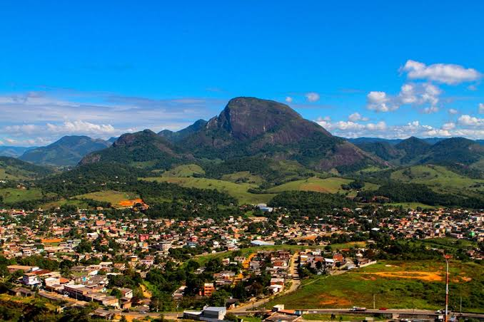
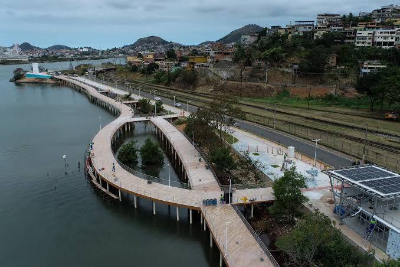

|
|
Cariacica |
|---|
Conhecida como a porta de entrada da Grande Vitória, destaca-se por sua rica zona rural, pelo ecoturismo no imponente Parque Mochuara e por abrigar a Estação Ferroviária Pedro Nolasco.


Aqui voce pode realizar o download dos principais pontos turisticos de Cariacica